МИНИСТЕРСТВО
СТРОИТЕЛЬСТВА ПРЕДПРИЯТИЙ
НЕФТЯНОЙ И ГАЗОВОЙ ПРОМЫШЛЕННОСТИ
Всесоюзный
научно-исследовательский институт
по строительству магистральных трубопроводов
ИНСТРУКЦИЯ
ПО ТЕПЛОВОЙ ОБРАБОТКЕ СБОРНЫХ
ИЗДЕЛИЙ ИЗ БЕТОНА И ЖЕЛЕЗОБЕТОНА
ПРОДУКТАМИ СГОРАНИЯ ПРИРОДНОГО ГАЗА
ВСН 2-93-81
Миннефтегазстрой
МОСКВА 1982
ВНИИСТ
В Инструкции представлены
основные положения по технологии тепловой обработки изделий из бетонов марок
400 и менее на плотных и пористых заполнителях продуктами сгорания природного
газа, по устройству теплогенераторов и камер тепловой обработки; приведены
сведения по назначению и контролю режимов тепловой обработки, а также правила
техники безопасности.
С помощью тепловой обработки
индустриальных изделий сборного железобетона продуктами сгорания природного
газа можно в 4 - 6 раз уменьшить расход технологического топлива, снизить
себестоимость изделий, улучшить их качество, а также условия труда рабочих и
условия эксплуатации оборудования.
Инструкция разработана на
основании лабораторных исследований с учетом результатов отработки технологии в
заводских условиях и оплаты внедрения керамзитобетонных панелей на Ухтинском
заводе и на Вуктыльском заводе ЖБИ Главкомигазнефтестроя,
на Надымском заводе крупнопанельного домостроения объединения Сибжилстрой и на
открытом полигоне треста Севергазстрой.
Инструкция составлена канд.
техн. наук Е.И.
Слепокуровым; инженерами: Ю.А. Бажуковым, Л.Б. Соколовой,
К.В. Скарбялюсом (СФ ВНИИСТа), кандидатами техн. наук К.И. Звягинцевым, Э.Б. Пинсон
(ВНПО Союзпромгаз); докторами техн. наук А.Н. Счастным, К.Э.
Горяиновым (ВЗИСИ) и докторами техн. наук Б.А.
Крыловым, Л.А. Малининой и канд. техн. наук Н.Н. Куприяновым (НИИЖБ Госстроя СССР).
Инструкция предназначена для производственных и
проектных организаций, занятых проектированием предприятий по изготовлению
изделий из сборного железобетона.
|
Министерство
строительства предприятий нефтяной и газовой
промышленности (Миннефтегазстрой СССР)
|
Ведомственные
строительные нормы
|
ВСН 2-93-81
|
|
Инструкция
по тепловой обработке сборных изделий из бетона и железобетона продуктами сгорания природного газа
|
Миннефтегазстрой СССР
|
|
Взамен
ВСН 2-93-77
|
1.1. Настоящая Инструкция
предназначена для организаций, проектирующих и применяющих новую технологию тепловлажностной обработки изделий сборного железобетона на действующих и вновь строящихся предприятиях Миннефтегазстроя под наблюдением научно-исследовательских организаций. Инструкция распространяется
на все виды бетонов с объемной массой не менее 600 кг/м3 с маркой по прочности до 400 включительно.
1.2. Проектирование, монтаж и
эксплуатация оборудования должны осуществляться в соответствии с «Правилами безопасности в
газовом хозяйстве», утвержденными Госгортехнадзором СССР от 26 июня 1979 г., и с учетом требований соответствующих глав СНиП и
настоящей Инструкции.
1.3.
Эксплуатацию теплогенераторов следует осуществлять в соответствии с Инструкцией
по эксплуатации, приведенной в прил. 1
и 2.
1.4. Не
допускается размещение деталей теплогенератора, системы рециркуляции, деталей
газопроводов к горелкам и систем автоматики выше верхнего уровня камеры при
снятой крышке.
|
Внесена СФ ВНИИСТа, ВНПО Союзпромгаз, НИИЖБ
Госстроя СССР, ВЗИСИ, Главкомигазнефтестрой
|
Утверждена Миннефтегазстроем
11 августа 1981 г.
|
Срок введения
1 июня 1982
г.
|
|
Согласовано с Госстроем СССР
31 июля 1981 г.
|
2.1. Продукты сгорания
природного газа получают путем сжигания попутного или природного газа в
теплогенераторах ТОК-1, ТОБ-2 конструкции ВНПО
Союзпромгаз.
2.2.
Номинальная тепловая мощность теплогенераторов ТОК-1 и ТОБ-2 составляет 217 кВт; коэффициент полезного использования тепла топлива в теплогенераторах: ТОК-1 - около 0,95; ТОБ-2 - около 0,70.
Другие характеристики
теплогенераторов приведены в прил. 1, 2.
2.3. Тепловую обработку
изделий сборного железобетона продуктами сгорания природного газа осуществляют
в ямных, щелевых или тоннельных камерах, размещенных внутри помещений и на
открытых полигонах.
2.4. В установку для тепловой
обработки изделий из железобетона продуктами сгорания природного газа входит:
камера тепловой обработки, теплогенератор (или несколько теплогенераторов),
системы: рециркуляции, газоснабжения, вентиляции и автоматика безопасности.
На рис. 1 приведена принципиальная схема подключения
теплогенератора к ямной камере, а на рис. 2 - принципиальная схема подключения
теплогенераторов к щелевой или тоннельной камере.
2.5. Теплогенераторы
целесообразно располагать непосредственно у стенки камеры вдоль нее. Ввод и
вывод циркулирующих газов в камеру следует производить по возможности в нижней
части камеры вплотную к стенам. При невозможности осуществить ввод газов в камеру в нижней
части рекомендуется производить подачу газов под углом к горизонтальной
плоскости вдоль поперечной стенки в нижний угол камеры.
2.6. Для проведения теплотехнических расчетов теплопроизводительность
теплогенератора ТОК и ТОБ принимают в соответствии с п. 2.2. Удельный расход тепла на тепловую обработку бетона
рассчитывают по формуле
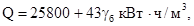
(1)
где 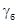
- объемная масса
бетона, кг/м3 при условии, что 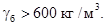
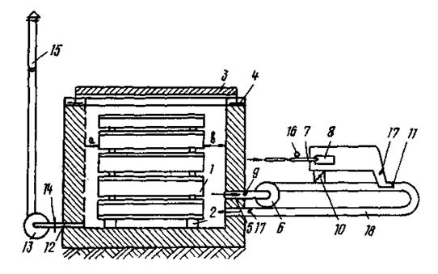
Рис.
1. Схема подключения теплогенератора к ямной камере:
1 - пакет форм в камере; 2 - подкладка под формами; 3 - крышки
камеры; 4 - гидравлический затвор; 5 - всасывающий патрубок;
6 - рециркуляционный
вентилятор; 7 - инжекционная горелка; 8 - керамический
насадок; 9 - корпус
теплогенератора;
10, 14 - шибер; 11 - инжектор; 12 - вентиляционный вытяжной патрубок; 13
- вытяжной вентилятор;
15 - дымовая
труба; 16 - манометр;
17 - термометрические трубки; 18 - рециркуляционный трубопровод
Расход тепла на тепловую
обработку 1 м бетона с объемной массой 1000 кг/м3 принимают равным 68,8 кВт · ч с
объемной массой 2200 кг/м3 - 120 кВт · ч.
2.7. Число теплогенераторов n на одну установку выбирают исходя из
обеспечения позонного
или временного температурного режима тепловой обработки и требуемой теплопроизводительности и рассчитывают по
формуле

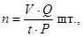
(2)
где V - объем
бетона в камере, м3;
Q
- удельный расход
тепла, кВт · ч;
t
- длительность
работы теплогенератора, ч;
Р - номинальная тепловая мощность
теплогенератора, кВт.
При Q = 86 кВт
· ч/м3, t = 8
ч и Р = 217
кВт, n = 0,050.
Полученное значение округляют
до большего целого числа.
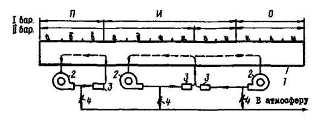
Рис. 2. Схема подключения
теплогенератора к щелевой или тоннельной камере:
I - вариант
для легкого бетона; II - вариант для тяжелого бетона; а - м - посты размещения вагонеток в тоннельной камере; П
- зона подогрева; И - зона
изотермического прогрева; О - зона охлаждения;
1 - тоннельная
камера; 2 - рециркуляционный вентилятор; 3 - камеры сгорания; 4 - задвижка
на вентиляционном трубопроводе
2.8. Ограждающие конструкции
камер тепловой обработки должны обеспечивать надежную герметичность,
достаточную прочность и требуемую теплоизоляцию. Стены камер рекомендуется выполнять толщиной 0,25 м из керамзитобетона
или других разновидностей легких бетонов с
объемной массой 1000 - 12000 кг/м3 или толщиной 0,3 - 0,4 м из монолитного
тяжелого бетона.
2.9. Крышки камер должны быть
паронепроницаемыми с надежным гидравлическим затвором и иметь общее сопротивление
теплопередаче не менее 1 м2 · ч · град/ккал.
2.10. Полы камер должны быть
бетонными с вбетонированными по уровню
подкладками под нижнее изделие. Для камер
тепловой обработки продуктами сгорания природного газа проектирование и
строительство системы канализации, сбора и отвода конденсата не требуется.
2.11. Проектирование систем
отопления и вентиляции новых цехов и заводов ЖБИ
с тепловой обработкой продуктами сгорания
природного газа следует производить по нормам тепловой обработки пропариванием.
2.12. Каждая ямная камера должна быть оборудована индивидуальным
теплогенератором (теплогенераторами). Использование одного теплогенератора для
обслуживания двух или нескольких ямных камер не рекомендуется. Устройство
теплогенератора и инструкция по его эксплуатации приведены в прил. 1 и 2. Схемы размещения теплогенераторов
при различных блокировках камер приведены в прил. 3.
2.13. Система рециркуляции
(см. рис. 1) состоит из
рециркуляционного вентилятора 6, теплогенератора 9 с инжектором 11 и системы труб и патрубков 5, 18,
соединенных между собой.
2.14. Система вентиляции
камер состоит из вытяжного отверстия 12, шибера 14, вентилятора 13 и дымовой трубы 15. Рекомендуется устройство единого сборного коллектора для
блока камер тепловой обработки. Система вентиляции должна обеспечивать
разрежение в камере в пределах 5 - 15 Па.
2.15. Щелевые или тоннельные
камеры тепловой обработки продуктами сгорания природного газа в месте входа и
выхода изделий в верхней части рабочего пространства должны быть снабжены
перфорированными трубами для отсоса газов в количестве, достаточном для
предотвращения их попадания в цех. Для этой же
цели входное и выходное отверстия должны быть снабжены предохранительной гибкой
завесой, например из брезента.
2.16. Каждый теплогенератор
должен быть оборудован автоматикой безопасности согласно прил. 1 и 2. Чертежи принципиальных и монтажных схем автоматики
безопасности, комплектующих деталей и размеры шкафов автоматики имеются в
комплекте теплогенераторов.
2.17. Для ямных камер в
помещениях цехов подачу газа в горелку при
возникновении в камерах избыточного давления следует прекращать.
Для щелевых и тоннельных
камер тепловой обработки в помещениях цехов подачу газа на горелки следует прекращать в случаях вытекания газов в цех, что устанавливают по повышенной
температуре в верхней части канала на входе и выходе в камеру с помощью контрольной термопары
или термометра.
2.18. Системой подачи газа к
горелкам должны быть предусмотрены возможность регулировки давления в пределах от 0,5 до 1,2 кгс/см2, а на газораспределительном устройстве (ГРУ) -
предохранительные устройства.
2.19. В камере сгорания должно
поддерживаться разрежение 5 - 15 Па, которое
регулируют при розжиге горелки с помощью шибера на патрубке теплогенератора.
3.1. Изделия из бетона после
формования необходимо выдержать до начала тепловой обработки не менее 3 ч при
температуре окружающего воздуха не менее 10 °С.
За счет применения подогретой воды затворения можно сократить длительность предварительного
выдерживания. При температуре бетонной смеси 20 °С время предварительного выдерживания - 2 ч, при температуре 40
°С - 1 ч.
3.2. При температуре бетонной
смеси и окружающего воздуха ниже 10 °С рекомендуется
предварительно выдерживать свежеотформованные
изделия в закрытой камере тепловой обработки с подогревом газовоздушной среды
камеры до температуры 30 - 40 °С в течение 2 -
1,5 ч.
3.3. Изделия в камеру
тепловой обработки следует устанавливать в виде пакета с зазором между
расположенными одна над другой формами 5 см, у
пола 10 - 15
см, у крышки 5 - 25 см; у боковых стен 10 - 15 см, у торцевой стены со стороны подачи нагретых газов из теплогенератора - 40 - 60 см, у противоположной торцевой стены - 10 - 15 см.
3.4. Необходимый для
предохранения
бетона от пересушивания коэффициент загрузки камер должен быть не менее 0,2.
Его определяют как отношение объема бетона (м3) к объему камеры (м3).
3.5. Температуру
теплоносителя в камере следует повышать с уменьшающейся во времени скоростью - 60 - 100 °С/ч в первые 0,5 ч; 30 -
40 °С/ч во вторые 0,5 ч и 10 - 20 °С/ч в последующие 2 ч и 2,5 - 5,0 °С/ч
в последующее время.
Время подъема температуры
среды в камере до 80 - 90 °С
должно быть не менее 1,5 ч при толщине изделий 300 мм и меньше и не менее 2,5 ч
при толщине изделий более 300 мм.
3.6. Максимальная температура
среды в камере должна быть 85 - 90 °С
для изделий из тяжелого бетона на портландцементе и 95 - 100 °С
для изделий на шлакопортландцементе. Допускается при соответствующем обосновании и
проверке повышать температуру среды в камере с изделиями из легкого бетона до 130 °С, но не ранее чем через 4 ч с момента
начала прогрева.
При использовании возгоняющейся
смазки форм температуру среды более 120 °С поднимать не рекомендуется.
3.7. Температура
теплоносителя на выходе из теплогенератора в любые моменты тепловой обработки
должна быть не более 160 °С.
3.8. Ямные камеры тепловой обработки должны работать под
разрежением величиной 5 - 15 Па. Разрежение в
камере регулируют шибером, установленным на вентиляционном вытяжном патрубке
камеры.
3.9. Содержание углекислого
газа в уходящих газах на выходе из камеры тепловой обработки через 1,5 - 2 ч от начала прогрева должно быть в пределах 4 - 5 %.
3.10. Относительная влажность
циркулирующих продуктов сгорания природного газа, определенная на входе в
теплогенератор, должна быть не менее 40 % при
температуре 80 - 90 °С.
Примечание. В необходимых случаях увлажнение
циркулирующих газов производят путем распыления воды за теплогенератором.
3.11. Режимы тепловой
обработки должны быть отработаны на каждом предприятии из расчета достижения
прочности через сутки после окончания тепловой обработки не менее 80 % от марочной для легкого
бетона на пористых заполнителях и не менее 70 % от
марочной для тяжелого бетона.
3.12. Ориентировочные режимы
тепловой обработки изделий из легких и тяжелых бетонов марок 50 - 300 в камерах периодического и непрерывного действия
приведены в табл. 1 и 2.
Таблица 1
Ориентировочные
режимы тепловой обработки легких бетонов марок до 150
|
Периоды тепловой обработки
|
Продолжительность
периодов (ч) в зависимости от толщины изделий и температуры смеси
|
|
200
- 240 мм
|
300
- 350 мм
|
|
10
- 20 °С
|
30
- 40 °С
|
10
- 20 °С
|
30
- 40 °С
|
|
Выдерживание до тепловой обработки
|
2,0
|
1,0 - 1,5
|
2
|
1,0 - 1,5
|
|
Разогрев среды до
температуры более 80 °С
|
2,0
|
1,5
|
2,5
|
1,5 - 2,0
|
|
Прогрев при температуре среды более 80 °С
|
4,0 - 5,0
|
4,0 - 6,0
|
4,0 - 6,0
|
4,0 - 6,0
|
|
Охлаждение до температуры поверхности менее 50 °С
|
2,0
|
2,0
|
2,5
|
2,5
|
|
Всего
|
10,0 - 12,0
|
8,5 - 11,0
|
11,0 - 13,0
|
9,0 - 12,0
|
Таблица 2
Ориентировочные
режимы тепловой
обработки тяжелых бетонов
|
Периоды тепловой обработки
|
Продолжительность
периодов (ч) в зависимости от толщины изделий и температуры смеси
|
|
30
- 200 мм
|
240
- 400 мм
|
|
10
- 20 °С
|
30
- 40°С
|
10
- 20 °С
|
30
- 40 °С
|
|
Выдерживание до тепловой обработки
|
2,0
|
1,0 - 1,5
|
2,0
|
1,0 - 1,5
|
|
Разогрев среды до
температуры 80 °С
|
2,5
|
2,0
|
2,5
|
2,0
|
|
Прогрев при температуре среды более 80 °С
|
4,0 - 6,0
|
4,0 - 6,0
|
4,0 - 6,0
|
4,0 - 6,0
|
|
Охлаждение до температуры поверхности менее 50 °С
|
2,0
|
2,0
|
2,5
|
2,5
|
|
Всего
|
10,0 - 12,0
|
9,0 - 11,5
|
9,0 - 13,0
|
9,5 - 12,0
|
3.13. Влагопотери бетонов за период тепловой обработки 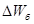
не должны превышать
(3)
где γ - объемная масса бетона (кг/м3) при условии, что γ ≥ 600 кг/м3.
Остаточная влажность бетона должна быть не менее
где γ - объемная масса бетона (кг/м3) при условии, что γ ≥ 600 кг/м3.
3.14. После завершения периода
тепловой обработки изделия охлаждают в камере с закрытой крышкой при
выключенных теплогенераторе и системе рециркуляции и включенном вытяжном
вентиляторе. Скорость охлаждения поверхности изделий толщиной до 300 мм должна
быть не более 40 °С/ч, а при толщине свыше 300 мм - не более 30 °С/ч.
Для легких бетонов марок 150 м и выше длительность
тепловлажностной
обработки следует назначать в соответствии с табл. 2.
3.15. Разгрузку камер и
распалубку изделий выполняют при перепаде температур между поверхностью бетона
и окружающего воздуха не более 40 °С. После
распалубки изделия следует выдерживать в помещении не менее 12 ч. За этот период окончательно отделывают и принимают
изделия.
4.1. При тепловой обработке
изделий из бетонов продуктами сгорания природного газа оператор контролирует их
и заносит в журнал следующие данные:
номер загрузочной камеры;
тип, число изделий, марку
бетона;
время окончания загрузки
камеры;
время начала и конца тепловой
обработки;
температуру среды в камере (1
раз в час);
разрежение в камере (1 раз в
час).
4.2. Контроль за температурным
режимом камер тепловой обработки производят в каждом цикле 1 раз в час, измеряя
температуру среды на участке рециркуляционного трубопровода до теплогенератора.
4.3. Контроль температуры
газов, подаваемых в камеру, производят при наладке теплогенераторов.
4.4. Контроль за
температурным режимом осуществляют с помощью дистанционных регистрирующих или
показывающих приборов
термопарами или термометрами.
4.5. Разрежение в камере
тепловой обработки контролируют с помощью микроманометра или тягонапоромера.
4.6. Относительную влажность
циркулирующих продуктов сгорания определяют с помощью сухой и мокрой термопары
по гигрометрической таблице.
4.7. Содержание углекислого
газа и кислорода в уходящих газах определяют 1 - 2 раза в смену с помощью прибора ГПХ-3м или приборов для
химанализа газов других типов с точностью определения не ниже 5 % измеряемой
величины.
4.8. Прочность бетона в
изделиях контролируют, испытывая отобранные из заводских замесов образцы,
отформованные и прогретые совместно с изделиями.
4.9. Другие технологические
требования должны соответствовать действующим техническим условиям на
приготовление изделия.
1. НАЗНАЧЕНИЕ ТЕПЛОГЕНЕРАТОРА
1.1. Теплогенератор для
напольных и других камер тепловой обработки железобетона предназначен для тепловлажностной обработки кирпича и
др. в среде продуктов сгорания природного газа в ямных, щелевых и тоннельных
камерах тепловой обработки.
Условное обозначение
теплогенератора для неполных и других камер тепловой обработки железобетона:
теплогенератор ТОК-1.
2. ТЕХНИЧЕСКАЯ ХАРАКТЕРИСТИКА
ТЕПЛОГЕНЕРАТОРА ТОК-1
|
Номинальная тепловая мощность, кВт (ккал/ч)*)
|
217
(187000)
|
|
Коэффициент избытка воздуха горелки
|
1,02 - 1,08
|
|
Коэффициент рабочего регулирования по тепловой мощности
|
2,75
|
|
Номинальное давление газа перед горелкой, кПа (кгс/м2)
|
80 (8000)
|
|
Температура теплоносителя на выходе из теплогенератора, К (°С)
|
Не
более 453 (130)
|
|
Скорость теплоносителя на выходе из теплогенератора, м/с
|
25
|
|
Производительность вентилятора, м3/с (м3/ч)
|
1,95 (7000)
|
|
Габариты, мм:
|
|
|
теплогенератора
|
2865×850×1200
|
|
панели приборной
|
240×420×402
|
|
щита управления
|
400×600×250
|
|
Масса, кг:
|
|
|
теплогенератора
|
675 ± 20
|
|
панели приборной
|
6 ± 0,2
|
|
щита управления
|
26 ± 0,8
|
____________
*) Номинальная тепловая мощность указана для газа с низшей теплотой сгорания 35,7 МДж/м3.
3. СОСТАВ ИЗДЕЛИЯ И КОМПЛЕКТ ПОСТАВКИ
3.1. В состав изделия входят,
шт.:
|
теплогенератор
|
1
|
|
панель приборная
|
1
|
|
щит управления
|
1
|
|
запальник инжекционный среднего
давления, многофакельный, шт.
|
1
|
3.2. В комплект поставки теплогенератора
для напольных и других камер тепловой обработки железобетона ТОК-1 входят, шт.:
|
теплогенератор (вентилятор с электродвигателем, установленные на
подрамнике,
на период транспортировки отсоединены от теплогенератора)
|
1
|
|
панель приборная
|
1
|
|
щит управления
|
1
|
|
запальник инжекционный среднего давления
многофакельный
|
1
|
|
комплект монтажных частей ТОК1.110
|
1
|
|
сборочный чертеж ТОК1.100СБ
|
1
|
|
монтажный чертеж TОК1.000M4
|
1
|
|
схема комбинированная функциональная
ТОК1.000C2
|
1
|
|
схема электрическая принципиальная ТОК1.00093
|
1
|
|
схема комбинированная подключения
ТОК1.000C5
|
1
|
|
паспорт ТОК1.000ПС
|
1
|
|
паспорт вентилятора
|
1
|
|
паспорта заводов-изготовителей на регулирующую и запорную
арматуру, контрольно-измерительные приборы и автоматику
|
1
|
|
упаковочный лист
|
1
|
4. УСТРОЙСТВО И ПРИНЦИП РАБОТЫ
4.1. Устройство установки тепловой обработки железобетона представлено на
принципиальной схеме (рис. 3). В схему входят камера тепловой обработки 1 (напольная, ямная,
щелевая, тоннельная и др.), теплогенератор 3, газоходы рециркуляции,
вентиляционная система 28, система
газоснабжения с контрольно-измерительными приборами, панель приборная 22 и щит
управления 26.
Панель приборную
устанавливают в пределах видимости шкалы не далее 7 - 8 м от теплогенератора,
щит управления не далее 10 - 12 м.
4.2. Теплогенератор состоит
из двух труб, расположенных горизонтально одна над другой, соединенных между
собой двумя патрубками. Верхняя труба является камерой сгорания, которая
футерована внутри шамотной массой. Один торец камеры сгорания закрыт крышкой,
футерованной с внутренней стороны. Во фланец другого торца камеры встроено газогорелочное устройство 4,
состоящее из инжекционной горелки 16 и керамического тоннеля 5. Нижняя труба с одной стороны
соединена газоходом с камерой тепловой обработки, с другой - через переходник с
рециркуляционным вентилятором 19. Патрубок 2,
выполненный в виде колена, соединяющего нижнюю трубу с камерой сгорания,
является инжектором. В другом патрубке установлена заслонка 6, предназначенная
для изменения величины разрежения в камере сгорания.
Рециркуляционный вентилятор 19 всасывающим патрубком
соединяется с камерой тепловой обработки.
Вентиляционная система 28
состоит из вытяжного патрубка, вентилятора и дымовой трубы. Эта система может
быть единой для нескольких камер, для чего и в этом случае устраивается общий
коллектор. Система вентиляции предназначена для создания в камере тепловой
обработки разрежения 0,5 - 1 кгс/м2 и
удаления избыточного количества теплоносителя, образующегося вследствие
сжигания газа в горелке.
На передней панели щита
управления 26 расположены:
пакетный выключатель
«Напряжение»;
кнопка «Снятие звукового
сигнала»;
кнопка «Вентилятор»;
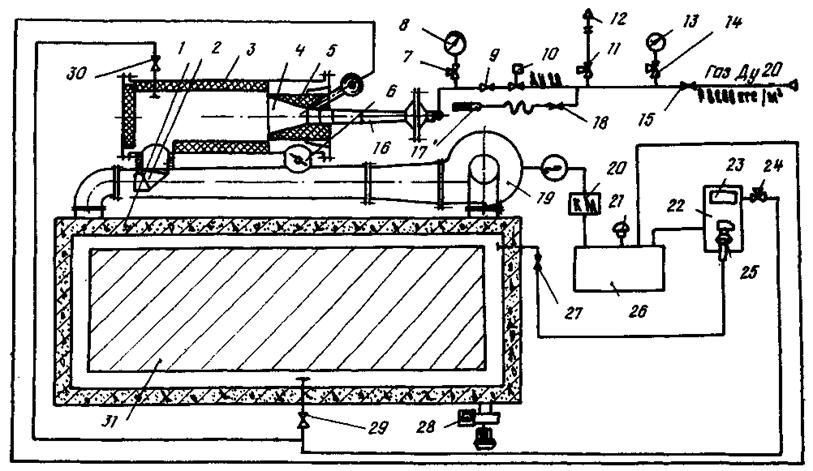
Рис. 3.
Принципиальная схема установки тепловой обработки железобетона:
1 - камера тепловой
обработки; 2 - инжектор; 3 - теплогенератор; 4 - устройство газогорелочное; 5 - тоннель керамический; 6 - заслонка;
7 - кран; 8 - манометр; 9 - кран; 10 - вентиль электромагнитный; 11 - кран; 12 - свеча; 13 - манометр; 14 - 16 - краны; 17 - запальник; 18 -
горелка; 19 - вентилятор
рециркуляционный; 20 - пускатель магнитный; 21 - звонок; 22 - панель приборная; 23 - тягонапоромер;
24 - кран; 25 - датчик реле напора и тяги; 26
- щит управления; 27 - кран; 28 - система вентиляционная; 29 -
30 - краны; 31
- зона загрузки изделий
кнопка «Розжиг»;
лампа «Напряжение включено»;
лампа «Факел»;
лампа «Разрежение низко».
Внутри щита управления 26
установлен автоматический выключатель рециркуляционного вентилятора.
На приборной панели 22
установлены: стрелочный прибор-тягонапоромер 23,
измеряющий разрежение в камере сгорания теплогенератора 3 и камере тепловой
обработки железобетона 1, датчик - реле напора
и тяги 25, подающей сигнал на отключение
электромагнитного вентиля подачи газа 10.
Схема контрольно-измерительных приборов и
автоматики теплогенератора обеспечивает:
технологический контроль
основных параметров;
автоматику и звуковую
сигнализацию;
автоматику безопасности.
Приборами технологического
контроля измеряют:
давление газа на входе в
газопровод теплогенератора манометром 13;
давление газа перед горелкой 16 и манометром8;
разрежение в камерах сгорания и тепловой
обработки тягонапоромером 23.
Схема автоматики безопасности
должна отключать подачу газа в следующих случаях;
при погасании факела;
при уменьшении разрежения,
создаваемого рециркуляционным вентилятором у всасывающего патрубка, ниже
минимально допустимого 2 кгс/м2;
при отключении электропитания.
Срабатывание приборов
автоматики безопасности сопровождается световой и звуковой сигнализацией.
Проверка исправности световой сигнализации и снятие звукового сигнала осуществляются кнопками,
установленными на щите управления.
4.3. При работе
теплогенератора высокотемпературные продукты сгорания газа смешиваются с
рециркулируемым воздухом (теплоносителем) в камере сгорания, при этом
температура продуктов сгорания снижается. Смесь продуктов сгорания газа с воздухом поступает к инжектору 2. После
вторичного смешивания температура теплоносителя уменьшается до 80 - 180 °С. С такой температурой теплоноситель поступает в
камеру тепловой обработки, циркулирует через штабель изделий, отдает им тепло и
вновь отбирается рециркуляционным вентилятором.
В процессе тепловой обработки
скорость изменения температуры рециркулируемого теплоносителя можно
регулировать путем изменения расхода газа, сжигаемого в горелке.
5. ПРАВИЛА БЕЗОПАСНОСТИ
5.1. Условия безопасной работы
при монтаже, наладке и эксплуатации теплогенераторов в комплексе с камерами тепловой обработки железобетона должны быть
обеспечены предприятием-потребителем в соответствии с требованиями: «Правил безопасности в газовом хозяйстве» Госгортехнадзора СССР, «Правил технической эксплуатации
электроустановок потребителей», «Правил
техники безопасности при эксплуатации электроустановок потребителей» Госэнергонадзора СССР, ГОСТ 212-75, а также
правил техники безопасности, действующих на данном предприятии.
5.2. Эксплуатация
теплогенератора с приборной панелью, за исключением щита управления, разрешается при температуре
окружающего воздуха от -50 °С до +40
°С. При температуре окружающего воздуха ниже -15 °С обязателен прогрев
электромагнитного вентиля 10 (см. рис. 3).
Теплогенератор и приборная
панель должны быть установлены в помещении, соответствующем пожарной
безопасности категории Г или Д, или вне помещения. Теплогенератор должен быть
закреплен на фундаменте.
Щит управления
должен быть установлен в отапливаемом помещении, соответствующем пожарной
безопасности категории Г или Д.
Щит управления и приборная
панель должны быть расположены в местах, удобных для обслуживания и освещенных.
5.3. Щит управления, панель
приборная, вентилятор и собственно теплогенератор должны быть заземлены
алюминиевым проводом сечением не менее 4 мм2 или стальным прутом
диаметром не менее 6 мм.
5.4. Металлические элементы
щита и внутрищитовые конструкции, предназначенные для крепления приборов, должны
иметь надежный металлический контакт (без краски) между собой, а также с
корпусом щита, обеспечивающий непрерывную электрическую цепь между всеми
элементами конструкций.
5.5. Приборы, имеющие
специальные выводы «Земли», следует заземлять медными проводами сечением не
менее 1,5 мм2.
5.6. Все подводящие и
отводящие трубопроводы должны иметь опоры или подвески.
5.7. Соединения всасывающего
и нагнетающего патрубка теплогенератора должны иметь уплотнения из асбестового
картона в соответствии с ГОСТ 2850-75 или паронита - с ГОСТ 481-71.
5.8. Теплогенератор и
газоходы рециркуляции должны быть изолированы снаружи минеральной ватой марки
75 по ГОСТ 4640-76 толщиной 30 мм, за
исключением мест, указанных в технических требованиях на чертеже ТОК1.100СБ. Температура теплоизоляционной поверхности не должна
превышать 45 °С.
5.9. Газопровод перед
присоединением к нему горелки должен быть тщательно продут сжатым воздухом,
чтобы своевременно предотвратить засорение сопла горелки.
5.10. Газопровод
теплогенератора должен быть окрашен в желтый цвет.
5.11. К работе на
теплогенераторе для напольных и других камер тепловой обработки железобетона
допускаются рабочие, достигшие 18-летнего
возраста и прошедшие медицинское освидетельствование. Рабочие должны быть
обучены безопасным методам работы, иметь практические навыки, сдать экзамены
комиссии, назначенной на заводе. Результаты экзаменов оформляются протоколом,
на основании которого рабочим выдают удостоверения.
Независимо от сдачи экзамена
каждый рабочий при допуске к работе должен получить инструктаж по технике
безопасности на рабочем месте.
5.12. Инженерно-технические работники, занимающиеся эксплуатацией
теплогенератора и его составных частей, должны сдать экзамен на знание «Правил
безопасности в газовом хозяйстве» Госгортехнадзора СССР, «Правил технической
эксплуатации электроустройств потребителей» (ПТЭ) и «Правил техники безопасности
при эксплуатации электроустановок потребителей»
(ПТБ) Госгортехнадзора СССР в объеме выполняемой ими работы.
5.13. Первичный пуск теплогенератора и
его составных частей осуществляется
специализированной организацией или газовой
службой совместно со службой главного энергетика завода по инструкции, утвержденной главным инженером завода.
5.14. Ремонт газопроводов,
газооборудования, электрооборудования и камер
тепловой обработки, работающих в комплексе с теплогенераторами, должна проводить
специализированная организация или газовая
служба совместно со службой главного энергетика завода (цеха).
5.15. Участок
тепловой обработки железобетона в камерах,
работающих в комплексе с теплогенераторами,
должен быть обнесен защитными ограждениями, внутрь которых допускать
посторонних лиц не разрешается.
5.16. Работа теплогенератора и его составных частей должна осуществляться под надзором
оператора. Допускается обслуживание одним оператором нескольких теплогенераторов при
смежном их расположении.
5.17. Перед розжигом горелки
теплогенератора следует убедиться в исправности системы вентиляции и
рециркуляции. При обнаружении неисправностей
включать теплогенератор запрещается.
5.18. Крышку камеры тепловой обработки снимают только с разрешения лица, ответственного за газовое хозяйство цеха (участка).
5.19. Обслуживающему персоналу запрещается оставлять без
присмотра работающий теплогенератор, а также эксплуатировать его в случае неисправностей.
5.20. Запрещается перемещение
грузов кранами непосредственно над теплогенераторами и газопроводами.
5.21. Перемещение теплогенератора осуществляют строповкой двумя петлями за корпус теплогенератора, при этом вентилятор и электродвигатель должны быть отстранены от
теплогенератора. Щит управления следует перемещать строповкой за скобу, расположенную в его верхней части.
5.22.
Автоматика безопасности должна обеспечивать
отключение подачи газа, сопровождающееся звуковой и световой сигнализацией в следующих случаях: при погасании факела, уменьшении
разрежения, создаваемого рециркуляционным вентилятором у всасывающего патрубка ниже минимально допустимого при отключении
электропитания.
5.23. Схема газоснабжения и
производственная
инструкция по эксплуатации, утвержденная
руководителем предприятия, должны быть вывешены на рабочем месте.
6. ПОДГОТОВКА ТЕПЛОГЕНЕРАТОРА К РАБОТЕ
6.1. Перед началом работ следует убедиться
в отсутствии запаха газа в помещении цеха. При обнаружении запаха газа работа теплогенератора до устранения неисправности запрещается.
6.2. Перед загрузкой камеры
следует убедиться
в отсутствии записей в сменном журнале, которые запрещают
выполнить работу или предупреждают о неисправности оборудования, и осуществлять внешний осмотр и проверку
исправности газопроходов, воздухопроводов, теплогенератора, контрольно-измерительных приборов,
щита управления и приборной панели.
6.4. Краны на газопроводе 9, 15 и 16 (см. рис. 3) должны быть
закрыты, а кран 11 на
продувочном газопроводе «Свеча» - открыт.
6.5. Краны 7, 14, 24 и 27 должны быть открыты.
6.6. Камеры тепловой
обработки должны
быть закрыты.
6.7. После включения автоматического выключателя рециркуляционного вентилятора и пакетного выключателя
«Напряжение» нажатием кнопки снять звуковой сигнал и убедиться, что горят все сигнальные лампы:
«Напряжение включено», «Факел» и «Разрежение низко».
6.8. Вентиляцию камеры тепловой
обработки и камеры сгорания теплогенератора производят в течение 5 мин., для чего запускают вентилятор
вентиляционной системы 28 и нажатием пусковой кнопки «вентилятор» запускают рециркуляционный
вентилятор 19, при этом должна погаснуть лампа «Разрежение
низко».
По тягонапоромеру 23 проверяют разрежение
в камере тепловой обработки и камере сгорания,
величины которых должны составлять соответственно 0,5 - 1 кгс/м2 и 1 - 2 кгс/м2. Тягонапоромер поочередно подключают к измерительным линиям соответствующими кранами 29 и 30, после
чего кран 29 закрывают, а кран 30 оставляют открытым.
Величину разрежения в камере сгорания регулируют с помощью заслонки 6.
6.9. Газопровод продувают газом через свечу 12 в течение 1 - 2 мин, для чего открывают кран 15 на газопроводе.
6.10. По окончании продувки
закрывают кран 11 на свечу 12.
7. ПОРЯДОК РАБОТЫ
7.1. Перед розжигом горелки 18 (см. рис. 3) необходимо убедиться:
закрыт ли кран 9 перед горелкой, кран 11 на
свечу 12 и кран 16 перед запальником 17;
закрыта ли камера тепловой
обработки;
в наличии рабочего давления газа;
в наличии рабочих величин разрежения в камере тепловой обработки и камере
сгорания теплогенератора.
7.2. Огонь подносят к запальнику 17 и открывают кран
16. Через отверстие во фронтальной плите теплогенератора вводят запальник в
камеру сгорания, при этом на щите управления 26 должна загореться сигнальная
лампа «Факел».
7.3. На щите управления нанимают кнопку «Розжиг», при
этом должен сработать вентиль с электромагнитным приводом 10.
7.4. Плавно открывают кран 9 перед горелкой 18 до
появления устойчивого факела, контролируя пламя через смотровой глазок во
фронтальной плите теплогенератора.
7.5. При устойчивом горении газа
закрывают кран 16 на запальник 17 и выводят его из камеры сгорания. Сигнальная
лампа «Факел» должна продолжать гореть. Увеличивая расход газа, выводят
теплогенератор на рабочий режим, контролируя рабочее давление газа 8000 кгс/м2
по манометру 8.
7.6. В случае погасания пламени гаснет лампа «Факел» и
включается звуковой сигнал 21. При этом следует немедленно закрыть кран 9.
Следующий раз разжигать горелку следует только после вентиляции камеры сгорания
теплогенератора, камеры тепловой обработки и далее по п.п. 7.1. - 7.5.
7.7. Во время работы теплогенератора и его составных
частей контролируют:
величину разрежения в камерах сгорания и
тепловой обработки;
давление газа перед горелкой;
наличие устойчивого факела;
температуру рециркулирующих газов.
7.8. Для остановки теплогенератора закрывают кран 9 на
горелку 18, а затем кран 15 на газопроводе и открывают кран 11 на свечу 12.
Звуковую сигнализацию снимают нажатием кнопки «Снятие
звукового сигнала».
Камеру тепловой обработки и камеру сгорания
проветривают в течение 30 мин.
Рециркуляционный и вытяжной вентиляторы останавливают
выключением выключателя «Напряжение» и автоматического выключателя
рециркуляционного вентилятора. После этого можно открыть крышку камеры тепловой
обработки.
8. ГАРАНТИЙНЫЕ ОБЯЗАТЕЛЬСТВА
8.1. Завод-изготовитель
гарантирует нормальную работу теплогенератора и его составных частей в течение
6 мес. со дня ввода
в эксплуатацию, но не позднее 12 мес. со дня отгрузки заказчику.
8.2. В течение гарантийного срока завод-изготовитель
безвозмездно ремонтирует и заменяет новыми все
детали и узлы, пришедшие в негодность по его
вине, при условии работы теплогенератора согласно указаниям по эксплуатации. Замена должна
производиться в течение одного месяца со дня получения заводом-изготовителем извещения от потребителя.
8.3. Завод-изготовитель не
несет ответственности за повреждения, возникшие вследствие
нарушения правил транспортировки, хранения и эксплуатации.
9. СВЕДЕНИЯ О РЕКЛАМАЦИЯХ
9.1. При выходе
из строя деталей теплогенератора во время гарантийного срока потребитель имеет
право предъявить заводу-изготовителю акт-рекламацию.
9.2. Акт-рекламация составляется
комиссией с обязательным участием представителя завода-изготовителя.
В нем должно быть указано:
наименование
организации-потребителя;
дата получения
теплогенератора с завода-изготовителя, наименование и номер документа, по которому он получен;
условия эксплуатации
теплогенератора;
условия, при которых
произошла поломка.
9.3. К акту-рекламации
прилагается акт о причинах поломки с заключением комиссии.
9.4. Рекламации не
принимаются в случае нарушения правил транспортировки, хранения и эксплуатации.
1. НАЗНАЧЕНИЕ
1.1. Теплогенератор для получения рециркулируемой
среды продуктов сгорания природного газа или
нагретого воздуха предназначен для создания в установках тепловлажностной обработки железобетонных изделий и строительных материалов
рециркулируемой среды продуктов сгорания природного газа (вентилируемой или
невентилируемой), а также для нагрева воздуха и отопления цехов
тепловлажностной обработки.
Условное обозначение
теплогенератора: ТОБ-2.
2. ТЕХНИЧЕСКАЯ ХАРАКТЕРИСТИКА
|
Номинальная тепловая мощность, кВт
|
197,7
|
|
Номинальный расход газа при теплоте сгорания 35,7 мДж/м3, м3/ч
|
20
|
|
Номинальное давление газа перед горелкой, кПа
|
80
|
|
Коэффициент рабочего регулирования по тепловой мощности
|
2,75
|
|
Коэффициент избытка воздуха горелки
|
1,02 - 1,08
|
|
Производительность вентилятора, м3/ч
|
4000 - 5000
|
|
Температура уходящих газов при расходе газа 20 м3/ч и нагреве воздуха, К
|
Не
более 930
|
|
Разница температуры теплоносителя на выходе из теплогенератора и на входе в
теплогенератор при расходе газа 20 м3/ч, К:
|
|
|
для смеси продуктов сгорания и воздуха
|
380 - 430
|
|
для воздуха
|
330 - 360
|
|
Габариты, мм:
|
|
|
нагревателя
|
4235×890×540
|
|
панели приборной
|
240×420×420
|
|
щита управления
|
400×600×250
|
|
Масса, кг:
|
|
|
нагревателя
|
850
|
|
панели приборной
|
6
± 0,2
|
|
щита управления
|
26 ± 0,8
|
3. СОСТАВ ИЗДЕЛИЯ И КОМПЛЕКТ ПОСТАВКИ
3.1. В состав изделия входит,
шт.:
|
нагреватель
|
1
|
|
панель приборная
|
1
|
|
щит управления
|
1
|
|
запальник инспекционный среднего
давления, многофакельный
|
1
|
3.2. В
комплект поставки теплогенератора ТОБ-2 входит, шт.:
|
нагреватель с вентилятором ВЦ-14-46-01 лев. с
электродвигателем 4А 112 МА 4
|
1
|
|
панель приборная
|
1
|
|
щит управления
|
1
|
|
запальник инфекционный, среднего давления, многофакельный
|
1
|
|
комплект монтажных частей ТОБ.2.090
|
1
|
|
сборочный чертеж ТОБ.2.010.СБ
|
1
|
|
монтажный чертеж ТОБ.2.000.МЧ
|
1
|
|
схема комбинированная функциональная ТОК.1.000
|
1
|
|
схема электрическая принципиальная ТОК.1.000ЭЗ
|
1
|
|
схема комбинированная подключения ТОК 1.000С5
|
1
|
|
паспорт ТОБ.2.000ПС
|
1
|
|
паспорт вентилятора
|
1
|
|
паспорта заводов-изготовителей на
регулирующую и запорную арматуру, контрольно-измерительные приборы и
автоматику
|
1
|
|
упаковочный лист
|
1
|
4. УСТРОЙСТВО И
ПРИНЦИП РАБОТЫ
ТЕПЛОГЕНЕРАТОРА
4.1. Устройство теплогенератора ТОБ-2 показано на принципиальной схеме
(рис. 4), соответствующей его
использованию в установке тепловлажностной обработки периодического действия.
Схема включает: нагреватель
1, газоходы рециркуляции 4, рециркуляционный
вентилятор 5, систему вентиляции 6, систему газоснабжения с контрольно-измерительными приборами и запорной арматурой 7 - 16, камеру тепловлажностной обработки 18.
4.2. Нагреватель ТОБ-2 представляет
собой две концентрические трубы 1 и 19. Наружная труба 1 является частью корпуса, внутренняя
труба 19 обогревается установленной в ней
горелкой 17 с керамическим тоннелем и снабжена ребрами для увеличения поверхности теплообмена с
рециркулируемым в промежутке между трубами 1 и 19
теплоносителем.
На первом по ходу продуктов
сгорания участке внутренняя труба 19 оребрена
только снаружи для улучшения ее охлаждения, на втором - ребра пропущены сквозь
эту трубу для улучшения теплоотдачи от продуктов сгорания к рециркулируемому теплоносителю.
Рециркулируемый вентилятор 5 отбирает теплоноситель (воздух или смесь продуктов
сгорания и воздуха) из камеры тепловлажностной обработки 18 и через газоход рециркуляции 4 направляет его в
промежуток между трубами 1 и 19.
В зависимости от положения
шиберов 20 и 21
продукты сгорания либо подмешиваются к
рециркулируемому теплоносителю (режим 1 - шибер 20 закрыт, шибер 21 открыт), либо отводятся в вентиляционную систему 6 (режим
2 - шибер 20 открыт, шибер 21 закрыт).
Нагретый теплоноситель через
газоход
рециркуляции 4 возвращается в камеру тепловлажностной обработки 18, повышая в ней температуру по заданному режиму. Скорость
повышения температуры регулируется изменением количества газа, поступающего в
горелку 17, с помощью крана 8.
Теплогенератор ТОБ-2 может работать в двух
режимах: 1 - с подмешиванием
к циркулирующим газам продуктов сгорания и 2 - без подмешивания.
При работе теплогенератора на
1-м режиме
разрежение в трубе 19 обеспечивается за счет
инжекции в дымораспределителе 22 продуктов сгорания рециркулируемым теплоносителем и регулируется шибером 21.
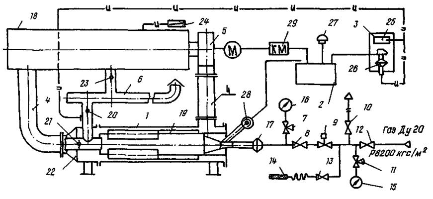
Рис. 4.
Принципиальная схема установки тепловлажностной обработки:
1 - нагреватель; 2 - щит управления;
3 - панель приборная; 4 - газоходы
рециркуляции; 5 - вентилятор рециркуляционный;
6 - система
вентиляции; 7, 8, 10, 11, 12, 13 - краны; 9 - вентиль электромагнитный; 14 - запальник; 15 - 16 - манометры; 17 - горелка; 18 - камера тепловлажностной обработки; 19 - внутренняя труба; 20, 21,
23 - шиберы;
22 - дымораспределитель;
24 - тягомер; 25 - тягонапоромер; 26 - датчик
реле напора и тяги; 27 - звонок; 28 - фотодатчик контроля факела; 29 - пускатель
магнитный
При работе теплогенератора на 2-м режиме разрежение
в трубе 19 обеспечивается вентиляционной системой 6 и регулируется шибером 20.
На этом режиме теплогенератор может использоваться для нагрева воздуха в камере
тепловлажностной обработки 18 или цехе тепловлажностной обработки.
Для обеспечения разрежения в
камере тепловлажностной обработки 18 часть теплоносителя из этой камеры отводится в
вентиляционную систему 6 в количестве, регулируемом шибером 23.
Величина разрежения в камере
определяется по тягомеру 24.
Величину разрежения в трубе 19 определяют по тягомеру 25
и контролируют с помощью датчика реле напора и тяги 26.
4.3. Вентиляционная система
может быть единой для нескольких камер, для чего в этом случае устраивается
общий коллектор. Система вентиляции предназначена для создания в камере
тепловой обработки разрежения 5 - 10 Па и удаления избыточного количества теплоносителя,
образующегося вследствие сжигания газа в горелке.
На передней панели щита
управления 2 расположены:
пакетный выключатель
«Напряжение»;
кнопка «Снятие звукового
сигнала»;
кнопка «Вентилятор»;
кнопка «Розжиг»;
лампа «Напряжение включено»;
лампа «Факел»;
лампа «Разрежение низко».
Внутри щита управления 2
установлен автоматический выключатель рециркуляционного вентилятора.
На приборной панели 3
установлены: стрелочный прибор-тягонапоромер 25, измеряющий разрежение в дымораспределителе 22 и в трубе 19,
датчик-реле напора и тяги 26, подающий сигнал на отключение электромагнитного
вентиля 9 (подачу газа).
4.4. Схема контрольно-измерительных приборов и
автоматики теплогенератора обеспечивает:
технологический контроль
основных параметров;
автоматику безопасности;
световую и звуковую
сигнализацию.
Приборами технологического
контроля производятся следующие измерения:
давления газа на входе в
газопровод теплогенератора манометром 15;
давления газа перед горелкой 17 манометром 16.
Схемой автоматики
безопасности предусматривается отключение подачи газа:
при погасании факела;
при уменьшении разрешения в дымораспределителе ниже минимально допустимого - 50 Па;
при отключении
электропитания.
Срабатывание приборов автоматики
безопасности сопровождается световой и
звуковой сигнализацией. Проверка исправности световой сигнализации и снятие
звукового сигнала осуществляется кнопками, установленными на щите управления.
5. ПРАВИЛА БЕЗОПАСНОСТИ
5.1. Условия безопасной работы
при монтаже, наладке и эксплуатации теплогенераторов в комплексе с камерами
тепловлажностной
обработки должны быть обеспечены предприятием-потребителем
в соответствии с требованиями: «Правил безопасности в газовом хозяйстве»
Госгортехнадзора СССР, «Правил технической
эксплуатации электроустановок потребителей»
(раздел ЭП), «Правил техники безопасности при
эксплуатации электроустановок потребителей»
(разделы ВП и БЩ) Госэнергонадзора СССР, ГОСТ 21204-75, а также правил техники безопасности, действующих на
данном предприятии.
5.2. Эксплуатация
теплогенератора с приборной панелью, за исключением
щита управления, разрешается при температуре от -50 °С до +40 °С. При
температуре ниже -15 °С обязателен обогрев
электромагнитного вентиля 9 (см. рис. 4).
Теплогенератор и приборная
панель должны быть установлены в помещении, соответствующем пожарной
безопасности категории Г или Д, или вне помещения. Нагреватель следует
закреплять на фундаменте.
Щит управления должен быть
установлен в отапливаемом помещении, соответствующем
пожарной безопасности категории Г или Д.
Щит управления и панели
приборов должны быть размещены в освещенных местах, удобных для обслуживания.
5.3. Щит управления, панель
приборная, вентилятор и собственно теплогенератор должны быть заземлены
алюминиевым проводом сечением не менее 4 мм2 или стальным прутком диаметром не менее 6
мм.
5.4. Металлические элементы
щита и внутрищитовые конструкции, предназначенные для крепления приборов, должны иметь надежный металлический
контакт (без краски) между собой, а также с
корпусом щита, обеспечивающий непрерывную
электрическую цепь между всеми элементами конструкции.
5.5. Приборы, имеющие
специальные выводы «Земля», должны заземляться медными
проводами сечением не менее 1,5 мм2.
5.6. Все подводящие и
отводящие трубопроводы должны иметь опоры или подвески.
5.7. Соединения всасывающего
и нагнетающего патрубков теплогенератора должны иметь уплотнения из асбестового
картона по ГОСТ 2850-75 или паронита по ГОСТ 481-71.
5.8. Нагреватель, за
исключением его торцевой части, газоходы рециркуляции должны быть изолированы снаружи матами минераловатными прошивными 1M-100-40 ГОСТ
21880-76. Температура теплоизолированной
поверхности не должна превышать 45 °С.
Теплоизолирование осуществляется заказчиком.
5.9. Газопровод перед присоединением
к нему горелки должен быть тщательно продут сжатым воздухом, чтобы не было засорения сопла горелки.
5.10. Газопровод
теплогенератора должен быть окрашен в желтый цвет с красными полосами.
5.11. К работе на теплогенераторе для напольных и других камер тепловой обработки железобетона допускаются рабочие, достигшие 18-летнего возраста и прошедшие медицинское освидетельствование. Рабочие должны
быть обучены безопасным методам работы, иметь
практические навыки и сдать экзамен комиссии, назначенной на заводе. Результаты
экзаменов
оформляются протоколом, на основании которого рабочим выдаются удостоверения.
Независимо от сдачи экзамена каждый рабочий при допуске к работе должен пройти
инструктаж по технике безопасности на рабочем месте.
5.12. Инженерно-технические работники, занимающиеся эксплуатацией
теплогенератора и его составных частей, должны сдать экзамен на знание «Правил безопасности в газовом хозяйстве» Госгортехнадзора СССР, «Правил
технической эксплуатации электроустановок потребителей» (ПТЭ) и «Правил техники безопасности при эксплуатации
электроустановок потребителей» (ПТБ) Госэнергонадзора СССР в объеме выполняемой
ими работы.
5.13. Первичный пуск
теплогенератора и его составных частей
осуществляет специализированная организация или газовая служба совместно со службой главного энергетика завода
по инструкции, утвержденной главным инженером завода.
5.14. Ремонт газопроводов,
газооборудования, электрооборудования и камер тепловой обработки, работающих в
комплексе с теплогенераторами, проводит специализированная организация или
газовая служба совместно со службой главного энергетика завода (цеха).
5.15. Участок тепловой
обработки железобетона в камерах, работающих в комплексе с теплогенераторами,
должен быть обнесен защитными ограждениями, внутрь которых посторонним лицам
вход запрещен.
5.16. Работа теплогенератора и
его составных частей должна осуществляться под надзором оператора. Допускается
обслуживание одним оператором нескольких теплогенераторов при смежном их расположении.
5.17. Перед розжигом горелки
теплогенератора следует убедиться в исправности системы вентиляции и
рециркуляции. При обнаружении неисправностей включать теплогенератор
запрещается.
5.18. Крышку камеры тепловой
обработки снимают только с разрешения лица, ответственного за газовое хозяйство
цеха (участка).
5.19. Обслуживающему персоналу
запрещается оставлять без присмотра работающий теплогенератор, а также
эксплуатировать его в случае наличия неисправностей.
5.20. Запрещается перемещение
грузов кранами непосредственно над теплогенераторами.
5.21. Теплогенератор
перемещается строповкой двумя петлями за корпус теплогенератора, при этом
вентилятор с электродвигателем должны быть отсоединены от теплогенератора. Щит
управления должен перемещаться строповкой за скобу,
расположенную
в его верхней части.
5.22. Автоматика безопасности
должна обеспечивать отключение подачи газа, сопровождающееся звуковой и
световой сигнализацией: при погасании факела, при уменьшении разрежения в
дымораспределителе ниже 50 Па, при
отключении электропитания.
5.23. Схема газоснабжения и
производственная инструкция по эксплуатации, утвержденная руководителем
предприятия, должны быть вывешены на рабочем месте.
6. ПОДГОТОВКА ТЕПЛОГЕНЕРАТОРА К РАБОТЕ
6.1. Перед началом работ
необходимо убедиться в отсутствии запаха газа в помещении цеха. При обнаружении
запаха газа работа теплогенератора до устранения причины запрещается.
6.2. Следует проверить в сменном
журнале отсутствие записей, которые запрещают выполнять работу или
предупреждение о неисправности оборудования.
6.3. Должны быть осмотрены и проверены исправности
газопроводов, воздухопроводов, теплогенератора, контрольно-измерительных
приборов, щита управления и приборной панели.
6.4. Краны на газопроводы 8, 12 и 13 (см. рис. 4) должны быть закрыты, а кран 10 на
продувочном газопроводе «Свеча» - открыт.
6.5. Проверяют открытое состояние кранов 7, 11.
6.6. Необходимо проверить правильность размещения
изделий в камере тепловлажностной обработки 18 (выходы в камеру
рециркуляционных газоходов должны быть свободны) и закрыта ли она.
6.7. Закрывают шиберы 20 и 22.
6.8. Включают пакетный включатель «Напряжение»,
нажатием кнопки снимают звуковой сигнал и убеждаются, горят ли сигнальные
лампы: «Напряжение включено» и «Разрежение низко».
6.9. Открывают шибер 20, чтобы убедиться в достаточном
разрежении в дымораспределителе по тягомеру 25, которое должно быть не менее
160 Па.
Сигнальная лампа «Разрежение низко» должна погаснуть.
6.10. Нажатием пусковой кнопки «Вентилятор» запускают
рециркуляционный вентилятор 5, открывают шибер 21 и закрывают шибер 20.
Убеждаются, достаточно ли он разрежен в дымораспределителе по тягонапоромеру
25, которое и при этом положении шиберов должно быть не менее 160 Па.
6.11. При необходимости использовать теплогенератор на
I-м режиме (п. 6.2)
оставить шибер 20 закрытым, шибером 21 по тягомеру 25 установить разрежение 100
- 150 Па.
При необходимости использовать теплогенератор на II-м
режиме (без подмешивания к теплоносителю продуктов сгорания или нагреве
воздуха) закрывают шибер 21, шибером 20 по тягонапоромеру 25 устанавливают
разрежение 100 - 150 Па.
Следует убедиться в правильном положении шиберов 20 и
21 в зависимости от выбранного режима работы теплогенератора.
6.12. С помощью шибера 23 устанавливают по тягомеру 24
разрежение в камере тепловлажностной обработки 5 - 10 Па.
6.13. Необходимо вентилировать камеру тепловлажностной
обработки и теплогенератора в течение 5 - 10 мин.
6.14. Открывают кран 12 и по манометру 15 убеждаются,
есть ли давление газа, которое должно быть в пределах 70,6 - 83,3 кПа.
6.15. Открывают кран 10 и производят продувку
газопровода газом.
6.16. По окончании продувки газопровода закрывают кран
10. При использовании теплогенератора только на II-м режиме
рекомендуется закрепить шибер 21 в закрытом положении и заглушить патрубок, в
котором установлен этот шибер.
7. ПОРЯДОК РАБОТЫ
7.1. Перед розжигом горелки 17 необходимо еще раз убедиться, закрыты ли краны 8, 10 и 13 и камеры тепловлажностной обработки; есть ли
рабочее давление газа и рабочие величины разрежения в камере тепловлажностной обработки и
дымораспределителе теплогенератора.
7.2. Подносят огонь к запальнику 14 и открывают кран
13. Через отверстие во фронтальной плите теплогенератора вводят запальник в
камеру сгорания, при этом на щите управления 2 должна загореться сигнальная
лампа «Факел».
7.3. На щите управления нажимают кнопку «Розжиг», при
этом должен сработать вентиль с электромагнитным приводом 9.
7.4. Плавно открывают кран 8 перед горелкой 17 до
появления устойчивого факела, контролируя пламя через смотровой глазок во
фронтальной плите теплогенератора.
7.5. При устойчивом горении газа
закрывают кран 13 на запальник 14 и выводят его из камеры сгорания. Сигнальная
лампа «Факел» должна продолжать гореть. Увеличивая расход газа, выводят
теплогенератор на рабочий режим, контролируя рабочее давление газа по манометру
16.
7.6. Если пламя погаснет, что сопровождается
погасанием лампы «Факел» и включением звукового сигнала 27, немедленно
закрывают кран 8. Следующий розжиг следует выполнять только после вентиляции
камеры сгорания теплогенератора, камеры тепловой обработки и далее по пп. 7.1 - 7.5.
7.7. Во время работы теплогенератора и его составных
частей необходимо проконтролировать:
величину разрежения в дымораспределителе и
тепловлажностной обработки;
давление газа перед горелкой;
наличие устойчивого факела;
температуру рециркулируемых газов.
7.8. Для переключения теплогенератора с одного режима
работы на другой приоткрывают закрытый шибер 20 или 21 до обычного рабочего
положения (при этом оба шибера 20 и 21 окажутся в открытом положении). Затем
один из шиберов, в зависимости от выбранного режима работы, закрывают, а другим
шибером подрегулируют разрежение в дымораспределителе.
7.9. Для остановки теплогенератора закрывают кран 8 на
горелку 17, а затем - кран 12 на газопроводе и открывают кран 10 на свечу.
Снимают звуковую сигнализацию нажатием кнопки «Снятие
звукового сигнала».
Проветривают камеру тепловой обработки и камеру
сгорания в течение 30 мин.
Останавливают рециркуляционный и вытяжной вентиляторы
путем выключателя рециркуляционного вентилятора. После этого можно открыть
крышку камеры тепловой обработки.
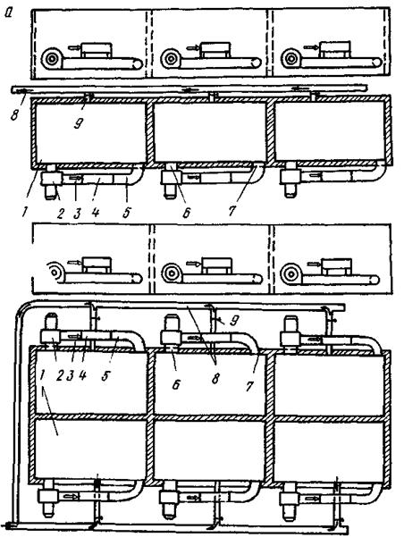
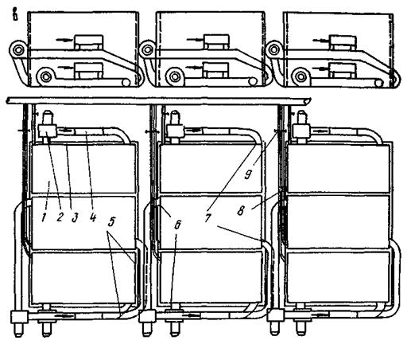
Рис. 5. Схема
размещения теплогенераторов при различных вариантах блокировки ямных камер:
а - при продольной; б - при продольно-поперечной; в - при
поперечной; 1 - камера тепловой обработки; 2 - рециркуляционный
вентилятор; 3 - газовая горелка; 4 - камера сгорания; 5 - нагнетательный патрубок; 6 - всасывающее отверстие; 7 - нагнетательное
отверстие; 8 - вентиляционный трубопровод; 9
- шибер вентиляционного канала
СОДЕРЖАНИЕ